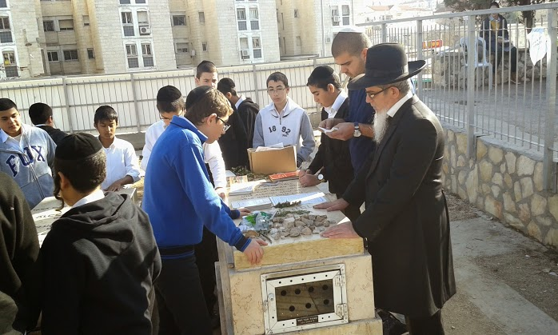
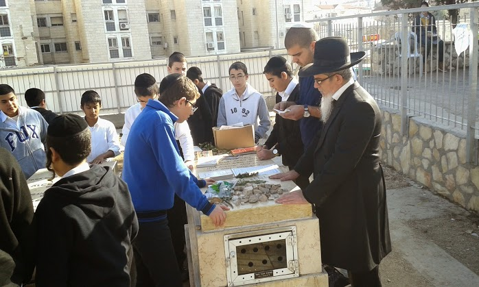

מוסדות התורה פני מאיר
מוסדרות התורה בראשות מו"ר הרב יוסף הללויה שליט"א הינם מוסדות תורה רחבים וענפים המיוסדים על שיטתו של הגאון הרב עובדיה יוסף זצ"ל המוסדות מכילים כוללים.................................................................

מוסדרות התורה בראשות מו"ר הרב יוסף הללויה שליט"א הינם מוסדות תורה רחבים וענפים המיוסדים על שיטתו של הגאון הרב עובדיה יוסף זצ"ל המוסדות מכילים כוללים.................................................................
